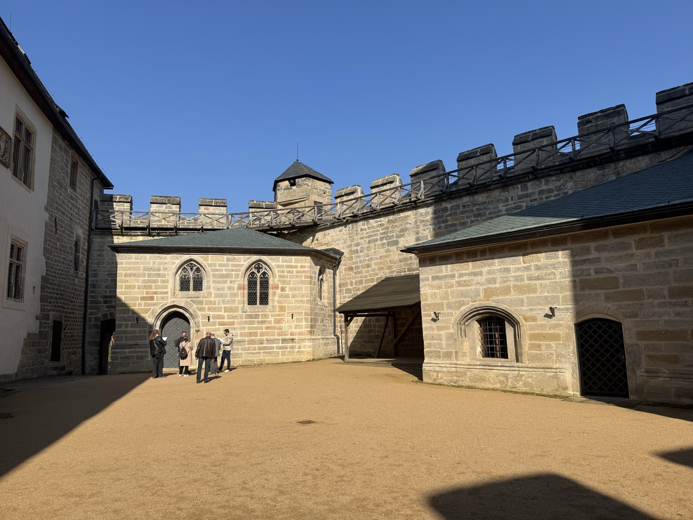

Kvalitní kamenické a zednické práce v Praze a okolí.
Tradice, zkušenosti, precizní řemeslo.
Klikněte na nabídku a zobrazí se detail pracovní pozice.
Kliknutím na produkt otevřete detail s orientační kalkulací ceny.
Kliknutím na realizaci otevřete kompletní fotogalerii s popisy jednotlivých prací.